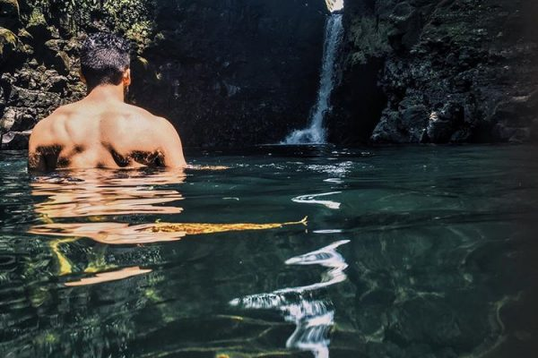

Exploring the beauty of nature

Itinerary Stops:
- Apia - Start your adventure in the capital city of Apia. Visit the Robert Louis Stevenson Museum and the vibrant Maketi Fou (market)
- Sauniatu - Journey to this serene village known for its beautiful waterfall and lush surroundings, perfect for a peaceful day in nature
- Lalomanu Beach - Head to one of Samoa's most beautiful beaches for sunbathing, snorkeling, and relaxation
- Falealupo Rainforest Preserve - Explore the lush rainforest, walk the canopy walkway, and visit ancient star mounds
Items to Pack:
- Swimsuits and beach towels
- Hiking shoes for rainforest walks and waterfall treks
- Reef-safe sunscreen
- Water bottle to stay hydrated
- Snorkeling gear
- Hat and sunglasses for sun protection